Working with Project
This section describes how to create a new project, open an existing one, and start the application.
Creating New Project
Studio provides a wizard to create new Jmix projects from scratch.
-
Open New Project wizard from the main menu: File → New → Project. Also, you can click New Project in the welcome screen of IDE.
-
Select Jmix Project in the dialog.
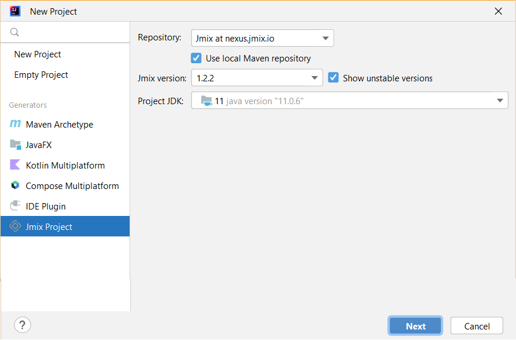Configure the main project settings on this step:
-
You can accept the default repository that is specified in the Repository field, or select Custom repository and configure it.
-
Select Use local Maven repository if you want to use artifacts from the local repository.
-
Select the Jmix version to be used in the project. If you do not have any specific requirements, use the latest released version.
For beta-testing or early accessing new Jmix framework features, you might want to use one of unstable Jmix framework versions, ones that end with BETA or SNAPSHOT suffixes. To see them in the Jmix version drop-down list, you need to select the Show unstable versions checkbox.
-
In the Project JDK field, select JDK corresponding to
JAVA_HOMEwhich is set in your environment. If you see the<No JDK>value, click Add JDK in the list and select the folder, where JDK is installed, for example,C:\Java\jdk8u202-b08on Windows or/Library/Java/JavaVirtualMachines/jdk8u202-b08/Contents/Homeon macOS.
-
-
On the next wizard step, select a template to be used for creating an empty project.
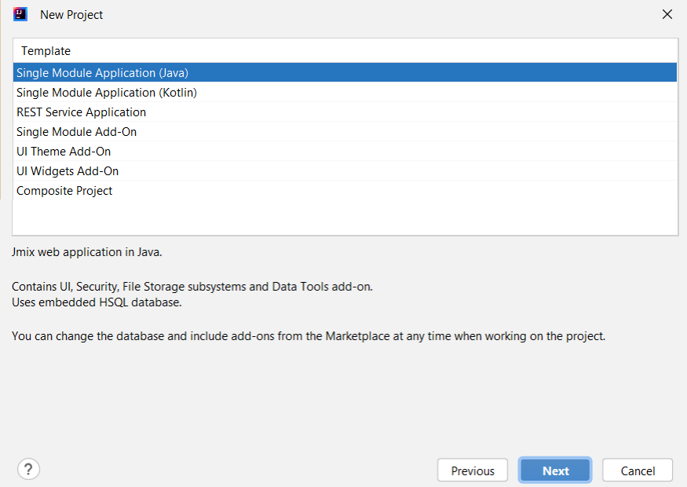 -
In the next window, you can set the project’s name, location, and localization.
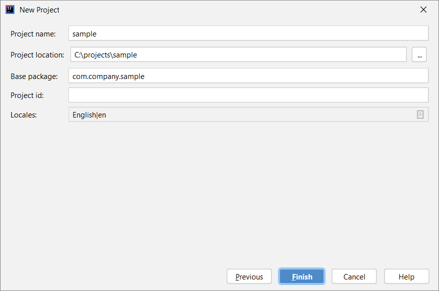-
Change value of the Project name field, if required. The name should contain only Latin letters, numbers, and underscores.
-
Project location is the path to the new project directory. You can select another directory by typing it in the field or clicking the button next to the field.
-
Base package is the base package for Java classes and resources. Choose the name of the package carefully. Later, you will be able to change the name and move classes and resources only manually.
-
Project id is optional. If it is set, Studio will use it as a prefix for entity, table and bean names. The project id must not be longer than 7 characters.
-
Use the Locales field to open an editor and add more supported locales to the project. You will be able to change them later if required.
-
-
Click Finish. The empty project will be created in the specified directory, and Studio will start building the project information from Gradle files and indexing the project.
When the project synchronization and indexing process is completed, you will see the Jmix project tree in the Jmix Tool Window.
Now you can start working on the project.
Opening Existing Project
To open the project, do the following steps:
-
Click Open in the welcome window of the IDE.
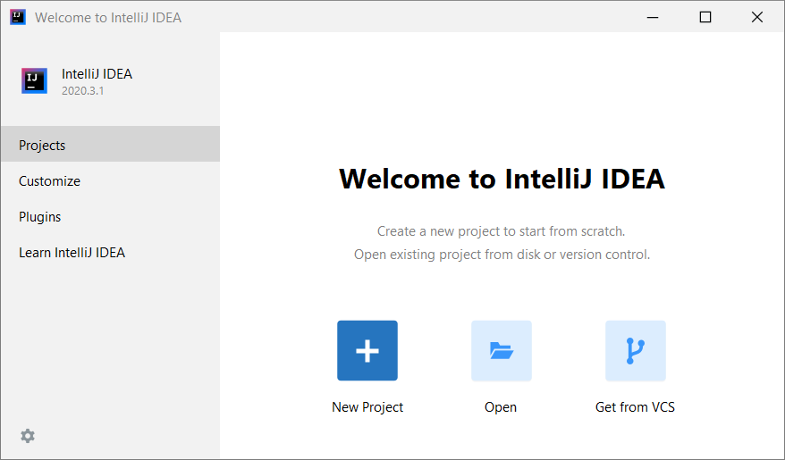If another project is already opened, go File → Open from the main menu.
-
In the file system dialog, select the projects root folder containing the
build.gradlefile, select it and click OK.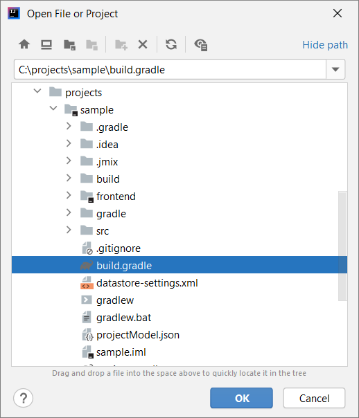 -
In the appeared dialog, select Open as Project.
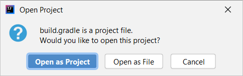Wait for Gradle synchronization and project indexing process to complete. The Jmix project tree should appear in the Jmix Tool Window.
If the project has been opened for the first time, open File → Project Structure from the main menu.
-
Make sure that the Project SDK field has a value corresponding to
JAVA_HOMEwhich is set in your environment. If you see the<No SDK>value, select Add SDK from the list and select the folder where the JDK is installed, for example,C:\Java\jdk8u202-b08on Windows or/Library/Java/JavaVirtualMachines/jdk8u202-b08/Contents/Homeon macOS. -
Make sure that the Project language level field has a value corresponding to the JDK version. For example, if the JDK is
1.8, the language level must be8 - Lambdas, type annotations, etc.
Also, you can open a project from recent projects. You can do it in the welcome window of the IDE or open File → Open Recent from the main menu.
Upgrading Project
This section covers the process of upgrading a project to a newer Jmix version.
|
We recommend putting your project under version control and committing all pending changes before the upgrade. It will allow you to see what changes are performed and quickly roll back to a previous version if the upgrade fails for some reason. |
-
Open the project as described in the previous section.
-
In the Jmix Tool Window, click the Settings button and select Project Properties.
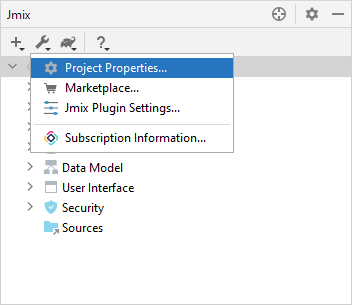 -
In the Jmix Project Properties dialog, click the Change link next to the platform version.
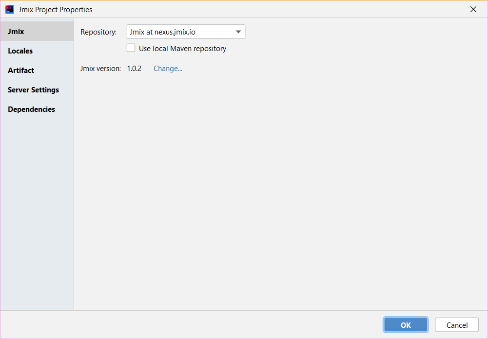 -
In the appeared dialog, choose the desired Jmix version from the drop-down list.
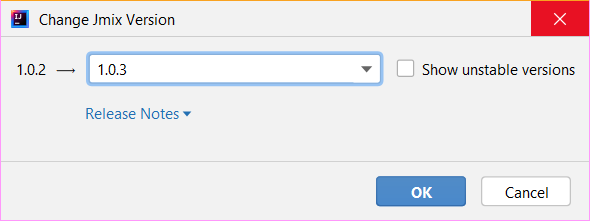For the purpose of beta-testing or early accessing new Jmix platform features, you might want to use one of the unstable Jmix platform versions that end with BETA or SNAPSHOT suffixes. To see them in the platform version drop-down list, you need to select the Show unstable versions checkbox.
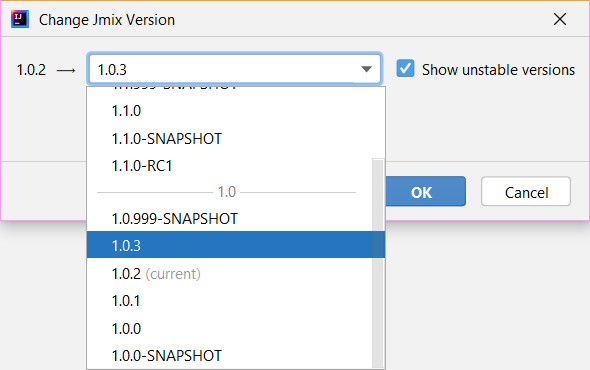Both BETA and SNAPSHOT versions are strongly not recommended for use in production.
-
You can press the Release Notes link and navigate to the documentation page that describes new features, improvements and breaking changes in the API of the new platform version.
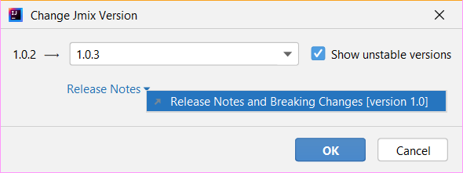 -
If you are upgrading to a newer feature release, for example, from 1.0.X to 1.1.X, the Migration Required section appears.
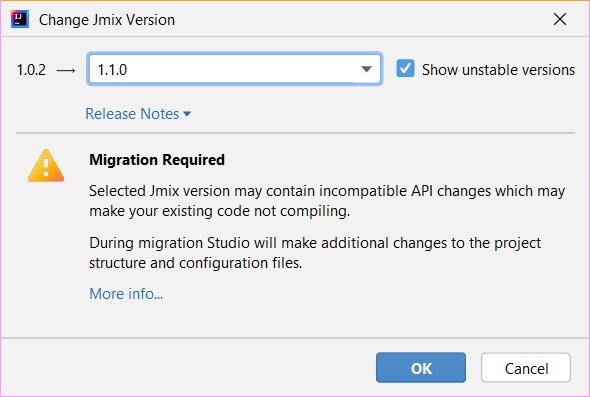By clicking the More info link, you can open another dialog containing information about changes that Studio will automatically perform to the project.
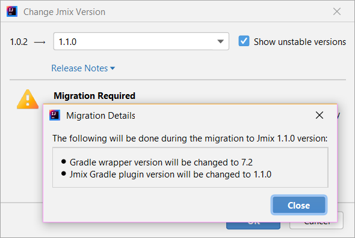 -
Click OK to confirm platform version upgrade, and click OK in the Project Properties dialog. Studio will show the migration dialog.
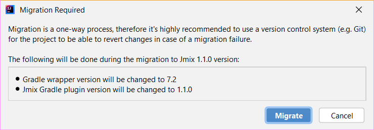 -
Click Migrate. Studio performs automatic migration and runs Gradle
cleantask. -
If you are upgrading to a feature release, review Breaking Changes section in Release Notes and make changes in your project accordingly.
-
Assemble your project by executing Jmix Tool Window → Gradle → Assemble.

Watch the output and fix your code if it doesnt compile.
-
Expand the Data Stores node in the Jmix Tool Window and select Generate Liquibase Changelog in the context menu of your data stores.
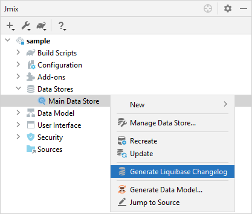Possible framework schema changes will be incorporated into your projects database.
Starting Application
When Studio imports Jmix project, it creates Run/Debug Configuration. You can use buttons in the main toolbar to run and stop your application.
To run the application and connect to it with the debugger, just click the debug button next to the selected Jmix Application configuration.
See the status in the Console tab of the Debug tool window.
You can access the application by clicking the link in the console.
To stop the application server, click the button in the main toolbar or in the Debug tool window.
Run/Debug Configuration Settings
You can adjust settings of the application running from the IDE by editing the Jmix Application Run/Debug configuration.
You can open the settings dialog by clicking the Jmix Application element in the toolbar and choose Edit Configurations in the context menu.
Also, you can open it from the main menu: Run Edit Configurations.
The Run/Debug Configurations dialog appears.
You might be interested in editing the following settings:
-
Before launch - tasks to be performed before starting the application. The following tasks are set automatically for a Jmix project:
-
Clean Hot Deploy Conf Directory - cleaning up hot deploy files created in a previous session.
-
Check Jmix Database - checking the difference between the data model and database schema and generation of database migration scripts. Remove this task if you don’t want to check and generate Liquibase changelogs on each application startup (you can do it manually from the data store context menu).
-
-
Environment variables environment variables that should be available to the Gradle process and to the application.
-
VM options JVM options passed to the Gradle process.
Note that VM options set in this field do not affect the running application directly. In order to pass them to the application JVM, configure the
bootRuntask in yourbuild.gradleas follows:bootRun { if (System.getProperty('jvmArgs')) { jvmArgs = (System.getProperty('jvmArgs').split("\\s+") as List) } }Then you can set the application JVM options in the VM options field, for example:
-DjvmArgs="-Duser.timezone=Europe/London -Dsome.property=somevalue"
Using Non-Default JDK
Both IntelliJ IDEA and Gradle by default use Java Development Kit (JDK) defined by the JAVA_HOME environment variable to assemble and run Java projects. In order to use the non-default JDK in your project without touching global system settings, you need to perform several steps.
Lets consider that JAVA_HOME environment variable points to the JDK 8 and you want to use JDK 11 in your project.
You need to perform the following steps:
-
Open File Project Structure from the main menu.
-
Select SDKs in the left menu. Press + button and select Add JDK.
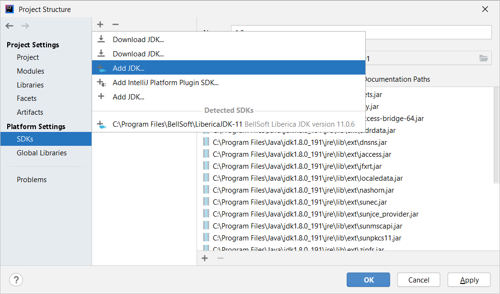 -
Select JDK 11 installation folder. Press OK to save changes.
-
If you create a new Jmix project, select "11" for the Project SDK field.
For existing projects open File Project Structure from the main menu and change the Project → Project SDK value.
-
Navigate to the project root folder and create
gradle.propertiesfile with the following text:# Path to JDK 11 org.gradle.java.home = C:/Java/jdk-11.0.5.10-hotspot -
Modify the
build.gradlefile located in the project root folder. Add the following statements:group = '...' version = '...' sourceCompatibility = '11' targetCompatibility = '11' -
In the Gradle tool window click Reload All Gradle Projects to refresh the Gradle project configuration.
When these changes are performed, the project is going to be compiled and run with JDK 11, without changing global system settings.
Hot Deploy
See Hot Deploy section for more details.